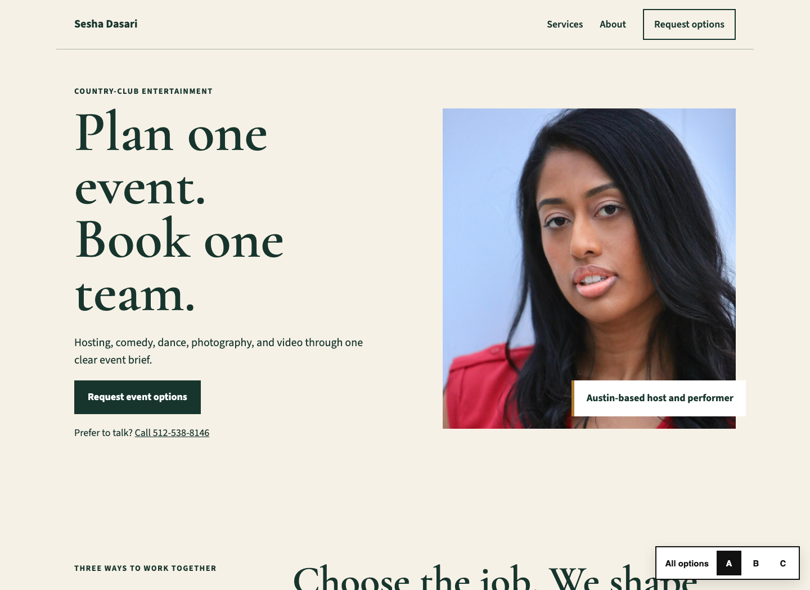
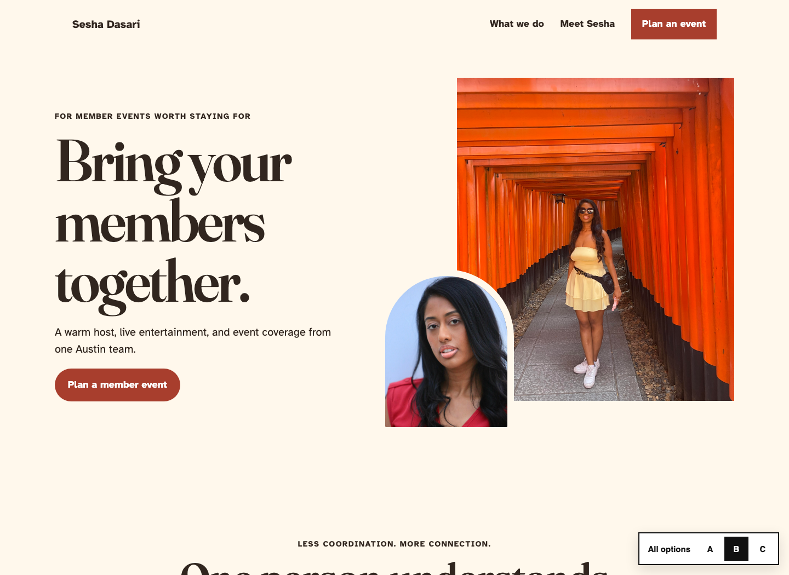
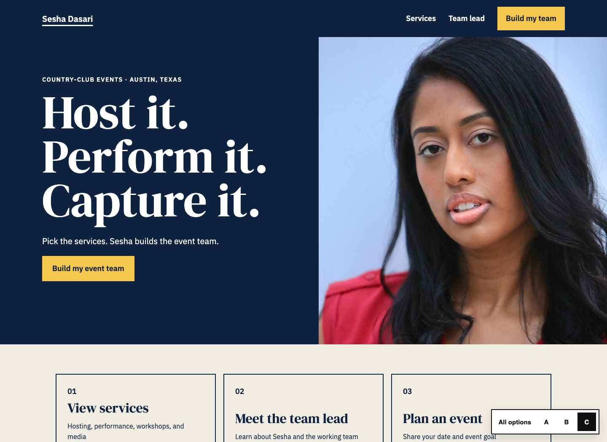

Variation A
Classic Club
Formal, composed, and familiar. Best for private-club event directors.
Cormorant Garamond + Source Sans 3
View Classic ClubSesha Dasari website study
Three concise sites for country-club decision-makers. Each uses larger type, strong contrast, direct contact, and one main action.

Variation A
Formal, composed, and familiar. Best for private-club event directors.
Cormorant Garamond + Source Sans 3
View Classic Club
Variation B
Friendly, social, and approachable. Best for member-experience teams.
Fraunces + Atkinson Hyperlegible
View Warm Gathering
Variation C
Direct, structured, and service-led. Best for fast booking decisions.
DM Serif Display + IBM Plex Sans
View Clear Concierge